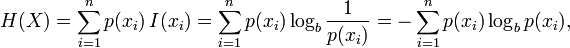
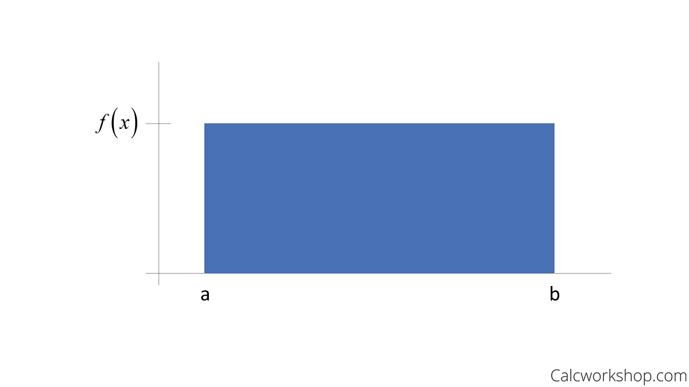
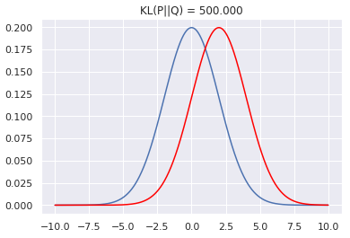

Comparing entropies for different cases for 2-class example

| Sr. No. | P(Y+) | P(Y-) | Entropy |
|---|---|---|---|
| 1 | 99% | 1% | 0.08 |
| 2 | 50% | 50% | 1.00 |
| 3 | 100% | 0% | 0.00 |
If both classes are equally probable, we have a maximum entropy value of 1.
If one class fully dominates, the entropy value becomes 0.

Comparing entropies for different cases for Multi-class example
- If all classes are equiprobable, the entropy will be maximum, i.e., uniform distribution.

- If one class has 100% probability and others are zero, the entropy is minimum.
- In this figure, entropy of skewed distribution will be lesser than that of normally distributed. More peaked is the distribution, lesser will be the entropy.
• Kullback-Leibler Divergence or relative entropy

- KL Divergence measures the difference between two probability distributions over the same variable X.
- For Discrete probability distributions P & Q on the same probability space X
\( D_{KL}(P || Q) = \sum_{x \in X} p(x) \log \frac{p(x)}{q(x)} \)
- For distributions P and Q of a continuous random variable
\( D_{KL}(P || Q) = \int_{-\infty}^{\infty} p(x) \log \frac{p(x)}{q(x)} \,dx \)
p(x) and q(x) are probability densities of P & Q